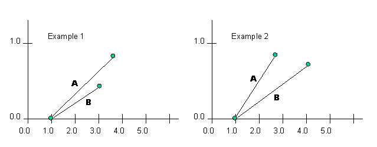

|
||||||||||
| PREV CLASS NEXT CLASS | FRAMES NO FRAMES | |||||||||
| SUMMARY: NESTED | FIELD | CONSTR | METHOD | DETAIL: FIELD | CONSTR | METHOD | |||||||||
java.lang.Object | +--nrc.fuzzy.FuzzySet.UITools
The UITools class was created to support the Fuzzy Union, Intersection
and Sum methods. The method fuzzyIntersectionUnion, the only method that
truly does any union/intersection type calculations, requires that certain
information be stored about each FuzzySet. Each UITools object is relevant
only to the FuzzySet that contains it.
For example, the fuzzyIntersectionUnion algorithm works with the concept of
comparing line segments; therefore, it is important to store two points for each FuzzySet
to define the current line segment for that FuzzySet.
As shown above, the two points stored to define the current line segment
are the UITools variables previous and current.
The previous point always has a smaller x value than the
current point.
Because each line segment of the FuzzySet is considered in sequence, it is
also important to store the index of the current point in the
FuzzySet; in this manner, the UITools object can keep track of where it is in the
FuzzySet and can advance to the next line segment.
The UITools object also contains methods that have relevance only in terms of the fuzzyIntersectionUnion method. For example, testing whether the end of the FuzzySet has been reached, calculating the slope of the current line segment (showed in the above diagram), finding the intersection point of two line segments, and other such methods.
Basically, the UITools class bundles together all the essential variables and methods for the purpose of Intersection and Union that do not belong as a direct part of the FuzzySet.
| Field Summary | |
protected nrc.fuzzy.SetPoint |
current
One of the two points required to define the current line segment being analyzed. |
protected int |
index
The index of the current point in the FuzzySet to
which this UITools object belongs. |
protected double |
maxX
The maximum x value of any point in either this FuzzySet, or the other FuzzySet in question. |
protected nrc.fuzzy.SetPoint |
previous
One of the two points required to define the current line segment being analyzed. |
| Constructor Summary | |
protected |
FuzzySet.UITools()
Constructs a new UITools object. |
| Method Summary | |
protected void |
addFinalPoint(FuzzySet.UITools b,
nrc.fuzzy.FuzzySet fuzzySet,
int operation)
Adds the final point to the Union, Intersection or Sum set. |
protected void |
calculateSlope()
Caluculates the slope of the line defined by previous, the
previous point, and current, the current point. |
protected boolean |
endOfSet()
Returns true if the end of the FuzzySet has been reached. |
protected nrc.fuzzy.SetPoint |
handleType1(FuzzySet.UITools b,
int operation)
Returns the next point that is to be stored in the Intersection, Union or Sum set. |
protected nrc.fuzzy.SetPoint |
handleType2(FuzzySet.UITools b,
int operation)
Returns the next point to be stored in the Fuzzy Intersection, Union or Sum Set, or returns null if there is no point to be stored. |
protected nrc.fuzzy.SetPoint |
handleType3(FuzzySet.UITools b,
int operation)
Returns the next point to be stored in the Intersection, Union, or Sum Set. |
protected nrc.fuzzy.SetPoint |
handleType4(FuzzySet.UITools b,
nrc.fuzzy.SetPoint intersect,
int operation)
Returns the next point to be stored in the Intersection, Union or Sum Set. |
protected nrc.fuzzy.SetPoint |
handleType5(FuzzySet.UITools b,
int operation)
Returns the next point to be stored in the Intersection or Union Set. |
protected nrc.fuzzy.SetPoint |
handleType6(FuzzySet.UITools b,
int operation)
Returns the next point to be stored in the Intersection, Union, or Sum Set, or returns null if there is no point to be stored. |
protected void |
initializeStartingPoint(nrc.fuzzy.SetPoint bFirstPoint,
nrc.fuzzy.SetPoint bLastPoint)
Initializes the previous point, the current point, the index to keep track of what point we're on in the FuzzySet, and maxX, the maximum x value in either of the FuzzySets in question. |
protected java.lang.Object |
lineSegmentIntersection(FuzzySet.UITools b)
Tests to see if two line segments, represented by the previous and current points of this UITool, and the UITool argument, intersect. |
protected void |
moveAheadOnePoint()
Assigns the value of current, the current point, to
previous, the previous point, and assigns the value
of the next point in the FuzzySet to current. |
| Methods inherited from class java.lang.Object |
clone, equals, finalize, getClass, hashCode, notify, notifyAll, toString, wait, wait, wait |
| Field Detail |
protected nrc.fuzzy.SetPoint previous
current point.
protected nrc.fuzzy.SetPoint current
current point.
protected double maxX
protected int index
current point in the FuzzySet to
which this UITools object belongs.
| Constructor Detail |
protected FuzzySet.UITools()
| Method Detail |
protected boolean endOfSet()
true if the last point of this FuzzySet
has been reachedprotected void moveAheadOnePoint()
current, the current point, to
previous, the previous point, and assigns the value
of the next point in the FuzzySet to current. In
essence, this method moves the UITool onto the next line
segment in the FuzzySet.
protected void initializeStartingPoint(nrc.fuzzy.SetPoint bFirstPoint,
nrc.fuzzy.SetPoint bLastPoint)
bFirstPoint - the first SetPoint in the other FuzzySetbLastPoint - the last SetPoint in the other FuzzySetprotected void calculateSlope()
previous, the
previous point, and current, the current point.
protected java.lang.Object lineSegmentIntersection(FuzzySet.UITools b)
b - the UITools object which provides the other line segment
(previous and current point) to test against the line
segment represented by this previous and current point
true
is returned if the lines are collinear, and a Boolean object
with a value of false is returned if the lines
simply do not intersect.
protected nrc.fuzzy.SetPoint handleType1(FuzzySet.UITools b,
int operation)
For a visual depiction of this situation, see the graph below.

b - the other UITools object through which to access any necessary
information such as previous and current pointsoperation - the integer specifying the operation being performed. The values possible
for this parameter are the constants UNION, INTERSECTION, SUM
and MAXMIN. In all of the UITools handlers, INTERSECTION
and MAXMIN are treated in the same manner.
protected nrc.fuzzy.SetPoint handleType2(FuzzySet.UITools b,
int operation)
null if there is no point to be stored.
The condition which For a visual depiction of this situation, see the graph below.

b - the other UITools object through which to access any necessary
information such as previous and current pointsoperation - the integer specifying the operation being performed. The values possible
for this parameter are the constants UNION, INTERSECTION, SUM
and MAXMIN. In all of the UITools handlers, INTERSECTION
and MAXMIN are treated in the same manner.
null if no such point exists
and the handler simply advanced the UITools to the next line segment(s)
protected nrc.fuzzy.SetPoint handleType3(FuzzySet.UITools b,
int operation)
For a visual depiction of this situation, see the graph below.

b - the other UITools object through which to access any necessary
information such as previous and current pointsoperation - the integer specifying the operation being performed. The values possible
for this parameter are the constants UNION, INTERSECTION, SUM
and MAXMIN. In all of the UITools handlers, INTERSECTION
and MAXMIN are treated in the same manner.
protected nrc.fuzzy.SetPoint handleType4(FuzzySet.UITools b,
nrc.fuzzy.SetPoint intersect,
int operation)
For a visual depiction of this situation, see the graph below.

b - the other UITools object through which to access any necessary
information such as previous and current pointsintersect - the SetPoint representing the intersection point of the two
line segmentsoperation - the integer specifying the operation being performed. The values possible
for this parameter are the constants UNION, INTERSECTION, SUM
and MAXMIN. In all of the UITools handlers, INTERSECTION
and MAXMIN are treated in the same manner.
protected nrc.fuzzy.SetPoint handleType5(FuzzySet.UITools b,
int operation)
For a visual depiction of this situation, see the 1st situation in the graph below.

b - the other UITools object through which to access any necessary
information such as previous and current pointsoperation - the integer specifying the operation being performed. The values possible
for this parameter are the constants UNION, INTERSECTION, SUM
and MAXMIN. In all of the UITools handlers, INTERSECTION
and MAXMIN are treated in the same manner.
protected nrc.fuzzy.SetPoint handleType6(FuzzySet.UITools b,
int operation)
null if there is no point to be stored. Note that the
third stipulation for the calling of this method is that that the x value
of the current point of this UITools is less than
the x value of the current point of the UITools argument. Therefore, the
manner in which this is called, ie. either a.handleType6(b) or
b.handleType6(a), is the result of a test in the
fuzzyIntersectionUnion method.
The conditions which
For a visual depiction of this situation, see the graph below.

b - the other UITools object through which to access any necessary
information such as previous and current pointsoperation - the integer specifying the operation being performed. The values possible
for this parameter are the constants UNION, INTERSECTION, SUM
and MAXMIN. In all of the UITools handlers, INTERSECTION
and MAXMIN are treated in the same manner.
null if no such point exists
and the handler simply advanced the UITools to the next line segment(s)
protected void addFinalPoint(FuzzySet.UITools b,
nrc.fuzzy.FuzzySet fuzzySet,
int operation)
b - the other UITools object through which to access any necessary
information such as previous and current pointsfuzzySet - the FuzzySet that the final point is to be added to. This is
either a Union set or an Intersection set; the method
determines which from the operation parameter.operation - the integer specifying the operation being performed. The values possible
for this parameter are the constants UNION and INTERSECTION.
|
||||||||||
| PREV CLASS NEXT CLASS | FRAMES NO FRAMES | |||||||||
| SUMMARY: NESTED | FIELD | CONSTR | METHOD | DETAIL: FIELD | CONSTR | METHOD | |||||||||